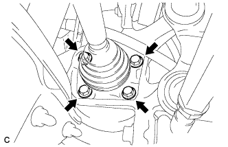
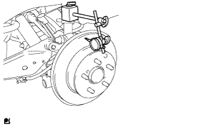

Rear Axle Hub & Bearing Assembly LH (4WD) Installation |
| 1. Install Rear Axle Hub & Bearing Assembly LH |
 |
Install the rear axle hub & bearing assembly LH to the rear axle carrier with the 4 bolts.
| 2. Install Rear Disc |
 |
) Align the matchmarks on the disc and axle hub, and install the disc.
| 3. Install Rear Disc Brake Caliper Assembly LH |
 |
Install the rear disc brake caliper assembly LH with the 2 bolts.
| 4. Connect Parking Brake Cable Assembly NO.3 |
 |
Pass parking brake cable assembly No.3 through the guide of the rear disc brake cylinder assembly LH.
 |
Connect the cable end to the operating lever of the rear disc brake cylinder assembly LH.
| 5. Install Parking Brake Lever Protector |
 |
Install the parking brake lever protector to the parking brake cable assembly No.3.
| 6. Install Speed Sensor Rear LH |
 |
Install the rear speed sensor LH with the bolt.
| 7. Install Rear Axle Shaft Nut LH |
Using a socket wrench (30mm), install a new hub nut.
| 8. Inspect Rear Axle Hub & Bearing Assembly Axial Play |
 |
Using a dial indicator, check the bearing axial play near the inner circumference (flange) of the axle hub.
| 9. Inspect Rear Axle Hub & Bearing Assembly Runout |
 |
Secure the rear disc with the hub nuts.
Using a dial indicator, inspect the runout at 10mm inside the outer edge of the rear disc.
| 10. Install Rear Axle Shaft Nut LH |
 |
Using a chisel and hammer, stake the rear axle shaft nut.
| 11. Install Rear Tire |
| 12. Perform Test Mode Inspection (Speed Sensor System) |
Reference